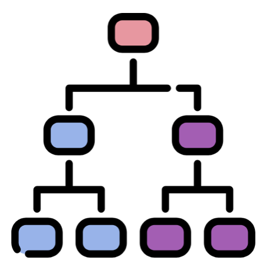
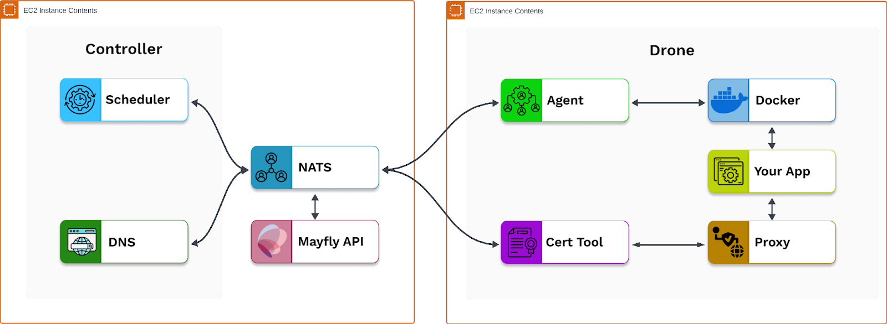
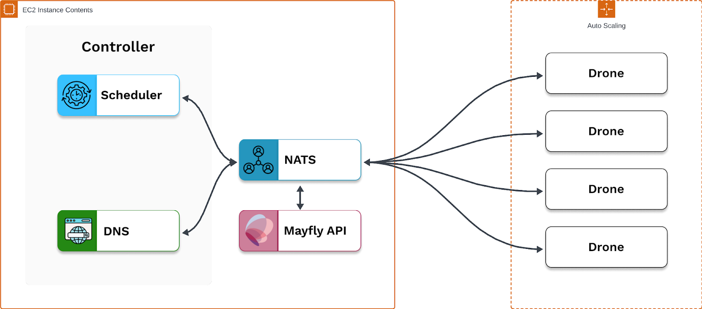

Mayfly
An open-source tool for hosting high-compute, collaborative, and stateful apps in the browser.
What is Mayfly?
Mayfly uses a technology called session backends to overcome the low compute, low memory limitations of the browser.
Open Source
Mayfly is open source and available through npm. Mayfly comes with a CLI and dashboard.
Auto Scaling
Mayfly adjusts capacity based on the number of user requests. It creates instances based on demand and terminates them automatically.
Security
Running instances are TLS secured with the ACME protocol.
PaaS
Mayfly is a platform as a service. Simply register your containerized application then launch it as a running instance.

Case Study
1 Introduction
1.1 What is Mayfly?
Mayfly is an open-source tool for deploying high-compute, high-memory apps to the browser. It utilizes a technology called session backends to overcome the limitations of stateless architecture for browser-based programs. Mayfly offers a CLI and dashboard to create, terminate, and manage backends (instances).
In this case study we’ll examine how Mayfly was built, starting with the problem domain. We will explore alternative solutions, lay out the critical components of the underlying technology, and discuss existing solutions.
2 Problem Domain
2.1 High Memory, High Compute (HMHC)
High-memory high-compute (HMHC) apps have complicated data structures that are updated frequently. An online code editor is a good example of an HMHC app. Beneath a code editor lies an abstract syntax tree (AST) or hierarchical representation of the code’s structure. A code linter, which checks for syntactical mistakes, must take into account the architecture of an entire file and not just one or two lines in isolation.
A representation of an abstract syntax tree
Some HMHC apps offer rich graphics and user interfaces. Both types of HMHC apps - those with complex state structures and those with detailed graphics - generate a lot of data. This poses several problems for software developers.
2.2 Desktop Applications
In the past, developers offered their HMHC apps primarily as desktop applications. Desktop applications are designed for the specific operating system (OS) of the user. They are optimized to directly access the central processing unit (CPU), the graphics processing unit (GPU), and the native memory of the user's computer, making them well positioned to deal with the vast volumes of data produced by HMHC apps. They are able to store data locally which means that the transfer of data in and out of the application is independent of the user’s internet connection. This helps avoid the need to make repeated round trips to the web server.
As an environment, the desktop comes with certain limitations that have made developers look to other mediums for hosting their HMHC apps. Desktop applications require download. If a user wants to access the application on two different machines - let's say a work and home computer - she would need to download the application client on each machine. This becomes a problem for developers trying to drive engagement in an impatient age. Studies have shown that users lose interest when faced with load times of over three seconds. Users may search for a competitor's application instead of waiting minutes for the app to download and install.
2.3 Browser Based Applications

Unlike desktop applications, web apps are available immediately and do not require download. Once the user has a browser installed and a working internet connection they can access a web application through any device without waiting. The browser’s main drawback is limited power in memory and processing. Unlike the desktop, browser-based apps are not optimized around the operating system of the user. Browser apps are subject to sandbox and security restrictions that are not applied to standalone, desktop applications. Compared to the desktop, browser-based apps are less performant even on equivalent hardware.
Desktop vs Web Applications
2.3.1 CRUD Apps
The browser is well suited to accommodate traditional web applications whose stack - or structure - consists of a web server with some business logic, a front-end interface, and a database. Most interactions - create, read, update, delete (CRUD) - entail small changes to the application state. State refers to the data stored in memory needed for a full-functioning application. An online banking app, for example, requests a client’s balance and deposit amount to update the client’s account information. It is not necessary for the banking app to load the client’s entire transaction history in order to record a change in their balance. State change in traditional web applications is relatively simple. The amount of data required for each change of state is small. The low memory, low compute operations of a CRUD app match the low memory, low compute capabilities of the browser.
A banking application requires minimal information to update your account information.
2.3.2 HMHC Apps in the Browser
This alignment begins to break down when faced with the high memory, high compute demands of applications like an online code editor or 3D data explorer. These applications depend on complex state that is being continuously updated. Compared to CRUD applications, the underlying data structures are complicated and highly interdependent. A code editor, it may be recalled from above, takes into account the web of relationships between various lines of code, revising that web of relationships after every keystroke. In some scenarios the browser will be unable to manage changes in state or slow to load the graphical interface of a data visualizer program like Rill Data. This will lead to slow performance or an unresponsive app. Developers have experimented with a number of approaches to overcome the challenges of deploying their HMHC applications to the low memory, low compute environment of the browser. What follows is a brief tour of some potential approaches.
3 Browser Based Apps: Alternative Approaches
3.1 Storage
One class of approaches takes advantage of the storage capacity of the client’s browser. Developers can pass small pieces of data (cookies) between client and server to track state. More directly, browsers can be used as a kind of database or key-value store. localStorage is a JavaScript property that allows data to be saved in key-value pairs. Unlike cookies, data housed in localStorage persists after the user exits the browser. Neither cookies - capped at 4096 bytes - nor localStorage - intended for small memory outlays - can keep pace with the data throughput of high-compute, high-memory apps.
Cookies are capped at 4096 bytes. To handle high-compute apps, developers would need to break apart state data into thousands of cookies and reconstruct it client and server side.
3.2 JavaScript Libraries
To manage the large amount of data from HMHC apps - especially graphical apps - the next cluster of approaches relies on JavaScript libraries and APIs to manipulate or make changes to the DOM. The DOM is a representation of the web page interface in the form of a tree-like structure. The tree is composed of a series of interconnected nodes. Through manipulating the DOM JavaScript libraries and APIs, developers can manage the higher data throughputs of 3D graphics and complex state.
React is a JavaScript library designed to manipulate the virtual DOM, a lightweight copy of the actual DOM by restricting updates to the parts of the DOM that have changed. Updating only parts of the DOM saves on unnecessary reloads and leads to smoother performance. React can run into scaling issues when state becomes sufficiently complex.
React works with a Virtual DOM.
WebGL is a “JavaScript API for rendering high-performance interactive 2D and 3D graphics”. WebGL is available across a wide range of browsers and excels in displaying animations and simulations. It uses parallel processing to offload computation from the browser CPU to the client’s GPU. WebGL is appropriate for applications that feature rich graphics. Non-graphically intense apps like code editors or collaborative apps would not benefit from the WebGL toolkit.
3.3 Data Compression
Since browsers struggle with high data throughput, another class of approaches emerges around the compression of data. Data compression is a process that reduces the size of transferred data while preserving the essential information and minimizing data loss. Data compression techniques enable browsers to parse quantities of data that were previously prohibitive. (Parsing is the process of turning data received from the server into the DOM - “painting the screen”) One example technology is WebAssembly.
WebAssembly compiles high-level languages like C++ or Rust into binary. This makes the transfer of data between client and server more efficient as binary code is significantly smaller than the equivalent file in a high-level language. With WebAssembly, complex and dynamic program state can be stored on the client machine. (Before WebAssembly, dynamic state was typically located on the web server). WebAssembly helps to extend the browser’s hosting capabilities to applications that would ordinarily be too large and too complex for it.
WebAssembly turns code into binary
3.4 Summary
In this section, we examined a few approaches available to engineers looking to host their applications on the browser. Storage technologies like cookies and localStorage are lightweight but unable to handle large quantities of data. DOM solutions like React struggle under the weight of complex state. WebGL provides an answer to the specialized case of graphically intense programs. WebAssembly compresses code into binary but is forced to contend with the modest memory and processing power of the browser. We are in search of a performant alternative that enables developers to deploy their infrastructure off the browser as their applications are still accessible through it.
4 Session Backends
4.1 Definition
Session backends are a technology that allows developers to host their browser-accessible applications on hardware with higher memory and CPU. A session backend is a dedicated service, spun up on demand by an orchestrator to maintain complex state in high-compute, high-memory applications.
Session backends are exposed to the internet through an endpoint generated by the orchestrator. They are capable of hosting a wide variety of applications from collaborative apps to data visualizers and 3D animators. Session backends are agnostic to their execution environment; they can be deployed on a virtual machine, as a container instance, or as a process in Rust. They depart from the traditional paradigm of stateless architecture, opting instead for stateful design.
Stateful vs Stateless Architecture
4.2 Stateful Architecture
Stateful design overcomes many of the problems associated with hosting high-compute apps in the browser. Session backends offload computation from the browser to processes, virtual machines, or containers all of which are better equipped to handle the stream of data pouring in from apps with complex state. Since requests in stateless design are independent, each request is sent with contextualizing metadata. Stateful design avoids this by retaining context between requests. Browsers no longer need to repeatedly query the server to maintain state.
Offloading computation from the browser to containers and virtual machines.
4.3 Drawbacks of Stateful Architecture
Stateful design comes with certain drawbacks. Load balancing between servers is challenging as load balancers need to remember client-server assignments. It is harder to scale a stateful system - for instance by adding more servers - since client requests are tied to specific servers.
Handling failover is difficult in a stateful system. In a stateless system where servers are fungible, each server is equally capable of handling incoming requests. Since stateful design is built around unique client-server connections, challenges arise around how to gracefully handle failover when a specific server goes offline. Stateless systems are less sensitive to offline servers, as current or new requests can be handed off to any server.
Now that we’ve established the problem domain (high-compute apps in the browser) and a potential solution (session backends) our discussion moves to implementation of session backends as a way to facilitate high memory high compute apps in the browser.
5 High-Level Challenges of Implementing Session Backends
5.1 The Three Layers
To implement session backends, developers need to address three domains in their deployment infrastructure: computation, orchestration, and communication. Computation speaks to the challenge of provisioning sufficient compute power. Orchestration refers to the on-demand creation and termination of session backends. An orchestrator must spin up (create) and spin down (terminate) a session backend on command. Communication entails routing client traffic to the correct backend and establishing a persistent connection, kicking off the bidirectional flow of data between client and server.
5.2 Computation Layer
Applications require hardware. The computational power of the underlying hardware - be it a physical server or an EC2 instance - must provide enough computational power to meet the demands of the application. Session backends permit developers to offshore computational responsibility from the browser to provisioned machines, typically in the cloud. In the wild, software engineers have devised a number of approaches to supply their session backends with computational infrastructure.
5.2.1 Examples
One set of solutions makes use of cloud resources to ensure that session backends have access to sufficient CPU. For example, GitHub Codespaces links a user to a virtual machine that maintains state throughout the session. Users can save their work and resume at a later date. GitHub Codespaces warns users to push their code to a repository for long-term persistence, suggesting that virtual machine connections are terminated after a set period of inactivity.
GitHub Codespace
Figma takes a different approach, fixing their number of servers and workers per server. Instead of relying on raw computing power, Figma utilizes Rust, a programming language with concurrent processes. Their engineering team noticed that workers would lock up around certain operations - like syncing in collaborative apps. Figma handed these ‘heavy workers’ off to a child process written in Rust that would communicate back to the server directly. This sped up serialization time by a factor of ten.

Figma’s Architecture
In this section we discussed a few methods developers have used to supply their browser based applications with compute power. Figma made use of processes in Rust to overcome locked workers and provide their collaborative apps with more peformant servers. GitHub looked to cloud infrastructure to power their code editors at scale. After ensuring their apps have sufficient compute power, developers of session backends must pivot to the problem of instance management. We need to design a scalable system that is responsive to user traffic.
5.3 Orchestration Layer
Session backends spin up (create) and spin down (terminate) backend instances on demand in a process called orchestration. An orchestrator responds to a client’s request for an instance (backend) and provides that client with a URL link to access it. The orchestrator detects backends that are no longer in use and spins them down automatically. Since unused instances consume system resources, session backends need a garbage collection mechanism. Without this, developers would need to provision redundant servers, harming system scalability.
5.3.1 Examples
At least three broad approaches can be discerned. One approach is on-demand server-focused. For example, GitHub CodeSpaces provisions virtual machines, exclusive for each user-based real-time request. Users activate a codespace through the GitHub dashboard after a short loading period while the CodeSpace’s orchestrator provisions and starts the virtual machine.
GitHub Codespaces
Another approach is the fixed-server, process-oriented approach of Figma. Figma operates with a set number of servers and a set number of workers per server. Backends are managed through processes. When a process goes unused for a period, Figma’s orchestrator kills that process.
Last is the auto scaling approach. Servers scale up and down based on present demand. Agones, another company in the session backend space, centers their orchestrator around Kubernetes, a container orchestration technology. Users are given a “fleet” of servers responsive to the load of the hosted application. When demand is high, Agones spawns a sufficient number of servers to provide a resource base for the session backends. When demand is low, Agones reduces the number of servers to minimize the use of excess resources.
Agones' Architecture
The best approach for backend orchestration is largely a question of specific use cases. The on-demand approach is the most technically straightforward but comes with a “cold start” or time delay for server setup. The fixed server approach may run into scaling issues if processes become locked or are used inefficiently. The auto scaling approach is the most technically demanding, involving the use of tools like Kubernetes but gives the developer precise control over cloud resources.
5.4 Communication Layer
Once session backends are created and provisioned in servers or processes, the deployer establishes a persistent connection between the backend and the client. This is an additional responsibility over and above a traditional load balancer in stateless architecture where the balancer can field new requests from clients and send them along to any server. User traffic must be consistently routed to the matching session backend so that data can flow back and forth between client and server. This is the communication layer.
5.4.1 Examples
Session backend providers must decide on a protocol before establishing a client-server connection. Agones uses UDP as its default protocol. UDP, or user datagram protocol, is aimed at real-time applications like games. UDP, unlike TCP, does not engage in a “handshake” before establishing a connection. As a connectionless protocol, UDP is suited for situations where accuracy can be sacrificed for speed. It is more acceptable for users playing a game to experience frame loss than a delay between their action and response from the software (lag).
TCP requires a ‘handshake’ that takes time before sending the actual request. UDP sends the request to the receiver immediately.
Before we can provide our users with a bidirectional data stream, we need to route their request to the correct session backend which requires communication between the orchestration and compute layers. Agones uses the `hostPort` field in Kubernetes to route users to the correct node and pod housing the game server. Kubernetes uses ingress controllers that are like reverse proxies for container orchestrators, providing session affinity (sticky sessions) so that a client is sent to their respective container.
5.5 Summary
Session backend deployers set aside resources for hosted applications (computation), spin backends up and down (orchestration), and keep alive a persistent, stateful connection between client and server (communication). We saw various methods for approaching these problems. Next, we’ll look, on a lower level, at the possible solutions a team of engineers may use to implement a session backend deployer.
6 Existing Solutions
To deploy session backends, developers have a range of options from do-it-yourself container orchestration to open source software or fully managed products on AWS. Some of these options come ready-made at a significant monetary cost, others require setup.
6.1 DIY
For the do-it-yourself container approach, developers may want to consider an AWS service like ECS. ECS, or Elastic Container Service, is an AWS-managed container orchestrator for managing and scaling containers. Containers are packages of software - including software dependencies - ready to run in any environment. Developers must choose how to manage their containers’ compute resources. Developers who go the self-managing route will use Amazon’s virtual machines (EC2 instances) to provision compute resources. An alternative is ECS on AWS Fargate. With Fargate, Amazon manages the compute space for your containers, automatically scaling up or down in response to demand.
Along similar lines, developers can leverage other combinations of technology in the AWS ecosystem. One option would be to use EFS, or Elastic File System, is an AWS-managed file system that enables the storage of application and/or session state to create a stateful container instance. ECS coupled with Application Load Balancer offers the option to enable sticky sessions, ensuring a persistent connection between user and session backend.
Developers with a preference for application code over infrastructure may opt for a hosted service. AWS App Runner lets developers specify the CPU and memory resources for their containerized source code. It automates the orchestration, load balancing, and scaling of web applications, and allows developers to specify the number of concurrent requests for an instance (for session backends most cases would be satisfied with a single concurrent request). App Runner returns a URL for each instance and accommodates wildcard domains, allowing developers to send unique hostnames to users. It handles the communication between its orchestration and computation layers.
Developers may find that cloud deployment options, like those available on AWS are outside the scope of their enterprise. Some may pivot towards open source software that has already laid much of the groundwork for session backend deployment.
6.2 Plane
Plane is an open source container orchestrator created by Drifting in Space. It is built for web applications that “exceed the CPU and memory limits of the browser, run code that can’t be compiled to JavaScript/WebAssembly, but needs to keep application state in memory, and/or pixel-stream entire GUIs over WebRTC.” Users connect to launched container instances from the browser. A connection is established with the container instance over a protocol like WebSocket. This initiates a bidirectional data stream. Though open source, developers need to clear a number of significant hurdles before Plane is made ready for deployment. To address this, Drifting in Space created a hosted platform called Jamsocket.
6.3 Jamsocket
Jamsocket is a paid, serverless, hosted platform built on top of Plane, providing scheduling, DNS, certificates, and observability. With one API call, made through the CLI or dashboard Jamsocket spins up a session backend based on a container image registered by the user. Jamsocket offers free and paid tiers. Subscribers get access to a higher number of concurrent session backends with greater processing power on Jamsocket’s hosting infrastructure.
6.4 Summary
Developers have a range of options for implementing session backends. Those fluent in technologies like Kubernetes may elect to go down the container orchestration route. Developers more focused on application code will choose a hosted service. Some will look to open-source software like Plane. This is the route our team chose. We noticed a lack of options for developers who wanted to deploy session backends with minimal time spent on configuration and system infrastructure. Mayfly is an open-source tool, ready out of the box, to deploy high-compute, high-memory apps on the browser. In the following section, we demo Mayfly and then lay out the problems and tradeoffs we faced in development.
7 Introducing Mayfly
Mayfly is an open source tool for deploying high-compute, high-memory apps in the browser. It utilizes session backends to overcome the limitations of stateless architecture for browser-based programs. Mayfly offers a CLI and dashboard to create, terminate, and manage backends (instances).
7.1 Installing Mayfly
In order to install and deploy Mayfly a user must have:
- An AWS account
- The AWS CLI installed and configured
- Terraform installed
- Packer installed
- npm installed
To install the Mayfly CLI, the user runs npm install -g @mayfly-team/mayfly. Next, running Mayfly lay will guide the user through a series of inputs to configure their specifications. After completing the initialization process, executing Mayfly hatch will provision Mayfly’s infrastructure on AWS and provide a URL to access the platform's dashboard.
After deploying Mayfly, the developer can visit the dashboard to add their container images to use as session backends, monitor their backends, and create backends for development purposes. In production, the developer should use the Mayfly API from the same URL to spawn session backends and receive URLS for session backends programmatically.
8 Building Mayfly
8.1 How Plane Works
Building an orchestrator, let alone for session backends, is a complicated task. As the goal of Mayfly was to build a managed tool for session backends, it did not make sense to make our own orchestrator. After reviewing existing solutions, we chose Plane to handle the orchestration and communication layers because it was most tailored to the purpose of creating session backends.
Plane consists of a controller and drone which handle the orchestration layer, and uses a Neural Autonomic Transport System (NATS) server to handle the communication layer. To understand how Mayfly works, we describe below how each component functions. To start, the controller is the dispatch center, responsible for accepting external requests for backends and deciding which drone to run them on. The controller is also responsible for routing traffic to the appropriate drone by serving DNS.
Next, the drones are the workers that run the actual backends. Each drone runs on its own machine and is responsible for coordinating with a local Docker instance to run backends, as well as dispatching inbound traffic to the appropriate container.
Lastly, NATS is a publish-subscribe message bus designed for event-driven distributed systems, known for its simplicity and scalability. Plane uses NATS for all communication between the developer API, the controller, and the drone.
8.2 Proof Of Concept
Our first goal for building Mayfly was to create a proof of concept to validate the idea of using Plane to run our session backends. We did this by deploying the controller and drone to our local machine using a sample configuration provided by Plane. To interact with Plane, we created an API that used the Plane CLI to send spawn requests to the NATS server in the controller. These spawn requests were then routed to the drone, which successfully spun up session backend docker containers and provided a link to reach them. This successfully validated our proof of concept for using Plane to orchestrate our session backends.
8.3 Core Application
To move our project past the proof of concept stage, we needed to address several limitations of the initial prototype.
8.3.1 NATS Communication
One limitation of the initial prototype was that it used the Plane CLI. It did this by using the JS library execa within the API, rather than communicating with the NATS server in the controller directly. This limited the ability of the API to specify request parameters and send different types of requests.
To solve this, we used a client library for NATS within our API to directly connect to the NATS server and send requests. This allowed us to cut out the Plane CLI and gave us full control over the NATS communication.
8.3.2 Computation Layer
From there, to fulfill the objective of creating a high-compute session backend tool, we needed to transition from locally hosting our initial prototype to hosting it in the cloud. This meant we needed to decide what cloud platform and what type of architecture we would use to remotely host Plane and the Mayfly API for the core application.
For the cloud platform, we decided to use AWS as it is an industry leader in cloud hosting. For the architecture, one main objective we had was to host the Plane controller and Plane drone on different machines rather than on the same machine, as they were. Doing so would provide for future horizontal scalability by allowing for multiple drones to connect to the controller.
To this end, we evaluated the benefits and tradeoffs of two approaches. The first was to use a managed service like AWS Elastic Kubernetes Service (EKS) or AWS Elastic Container Service (ECS) to host the controller and drone. EKS was attractive because Plane has a Kubernetes-like structure, with a controller as a control plane and drones as worker nodes.
To host the core application on either ECS or EKS, we would use AWS Fargate (a serverless compute engine for containers) to host the controller and an EC2 auto-scaling group to host the drones. These would then manage containers for the core application using services and tasks for ECS or pods and deployments for EKS. Both EKS and ECS would fulfill the requirements for the core application and provide for horizontal scalability.
The second approach we evaluated was using two AWS EC2s, one to host the controller and one to host the drone. Rather than using services and tasks to manage containers as with AWS ECS, we would use HashiCorp’s Packer tool to create Amazon Machine Images already containing the required applications. These AMIs could then be automatically deployed using user data bootstrap scripts within their launch templates.
Compared to using EC2’s, using a managed service like EKS or ECS provided the merit of horizontal scalability. However, both of these services were comparatively a more technically difficult leap than the second approach; specifically, for EKS the learning curve for Kubernetes and for ECS translating Plane to ECS services/tasks. We ultimately decided postponing horizontal scaling for using EC2’s was a better fit for rapid prototyping.
8.3.3 Path-based routing
Another limitation of the initial prototype was that it used path-based routing. Path-based routing is a Plane configuration setting that creates a unique URL routing to a corresponding session backend. It does this by appending a UUID corresponding to a session backend to the path of the URL. This allows developers looking to rapidly prototype or test proofs of concept to avoid dealing with the complications of configuring DNS.

Connecting to a session backend URL with localhost vs DNS in production
However, using path-based routing limited the initial prototype a big way. First, the UUID was only appended to the root path, rather than being dynamically appended to all paths at runtime. As a result, only simple apps restricted to using the root path were able to run.
We needed to disable path-based routing and instead configure DNS to route to the drone to solve this. First, we registered a domain underneath a DNS provider. Then, we set the drone and controller to use that domain as their cluster name. From there, we created a DNS wildcard A record to point to the public IP of the drone EC2. This allowed the controller to generate unique URLs in the format [uuid].example.com that would route to each corresponding session backend. This solved the previous limitations of app type and local hosting created by path-based routing.
8.3.4 Security
An issue we identified with the Mayfly core application was that it used an HTTP connection to route to the session backends. As HTTP is encoded, but not encrypted, this left the connection vulnerable to anyone intercepting the requests. To fix this, we decided to implement TLS to establish an HTTPS connection with the session backends.
To implement HTTPS, we used Let's Encrypt (a free, automated, and open certificate authority) to automatically retrieve certificates. This was done using ACME (Automatic Certificate Management Environment), a protocol designed to streamline the process of issuing and renewing digital certificates, along with Plane’s native method of responding to ACME challenges.
8.3.5 Developer Dashboard
To facilitate the ease of use for the developer hosting Mayfly, we created a dashboard to serve real time updates, provide CRUD functionality for ‘services’ (container images the developer wants to deploy), and a database to store metadata associated with the services/session backends.
8.3.6 Database
We opted for PostgreSQL as our data store. We composed our schema of users, images, and backends (instances that had been spawned). One question centered around the relationship between users and default images that we would provide for example purposes. Should we link default images to users or keep them “global” without tying them down to a single user? We opted to keep default images global to avoid repetition in the database. For live monitoring, we looked at a time series database since monitoring on a second by second basis generates a lot of data, and Postgres, though capable of handling large amounts of time based data, is not really designed for that task. We decided to limit monitoring to lifecycle states - up or offline - and felt that Postgres suited our needs.
We considered the tradeoffs between a REST-style or GraphQL API for our backend. GraphQL becomes especially attractive when relationships between entities in the database are deeply nested and overlapping such as in a social network. Our entities were neither nested nor overlapping. GraphQL was developed in response to the problem of repeated SQL queries in REST architecture. Some REST setups require multiple round trips and excess data. Our frontend triggered only single or double trips to the database so we kept with REST.
8.3.7 Deployment
To facilitate Mayfly’s use case as a self-hosted tool, we needed to create a simple, easy way to deploy the AWS infrastructure used to host Mayfly. We used infrastructure as code tools within a CLI that allow the developer to simply and easily deploy or tear down the Mayfly architecture through single commands to do this. The Mayfly CLI also allows the developer to specify the type of EC2 instance, provide their own domain, and specify other parameters like the size of the drone auto scaling group.
When implementing the infrastructure as code, the two main tools we considered using were AWS Cloud Development Kit (CDK) and Terraform. AWS CDK has the benefit of being native to the AWS platform. However, given our familiarity with HashiCorp’s Packer (which has a similar syntax to Terraform), we decided Terraform better suited our purposes.
9 Scaling the Core Application
With the previous limitations solved, the core application was able to spawn session backends and route to them from a cloud platform. From there, the next challenge we set out to solve was scaling the core application. Vertically scaling the core application proved to be as straightforward as changing the instance type of the drone EC2 to suit the developers’ computation needs. However, when attempting to horizontally scale the core application, we quickly ran into a major issue.
9.1 Horizontal Scaling 
The logical progression we followed for horizontally scaling the core application was to create more drones, each on its own EC2, and connect them to the controller. Connecting the controller to multiple drones and spawning backends from them in and of itself was straightforward to implement; we were able to do this by creating more drone EC2s and pointing them to the public IP of the controller. However, routing to specific session backends on different drones proved problematic with the core application as it was.
9.2 DNS A Record
The problem with routing to the drones through the external DNS provider we had set up was that we were using a DNS wildcard A record to route to a specific drone IP. With the way DNS A records work, the A record for a specific subdomain can only point to a single IP address. This meant that the A record for the wildcard * subdomain was only able to point to a single drone at a time, meaning it was unable to accommodate horizontal scaling.
To solve this, we evaluated the benefits and tradeoffs of two approaches. The first was to create an application load balancer to route to the different drones dynamically. Although this would work to solve the problem of accommodating horizontal scaling, the tradeoff was the technical challenge of implementing the load balancer logic and integrating it with the Plane drone URL system.
9.3 DNS Nameservers
The second approach we evaluated was to leverage the internal DNS server within the controller to act as an authoritative DNS server (the final holder of the IP of the domain queried for) which would route the URLs generated by the scheduler within the controller to the corresponding session backends within their respective drones. We ultimately decided to pursue this approach, as this was the method native to Plane of routing to drones.
To leverage the internal DNS server within the controller, we used the same domain from an external DNS provider we previously used. However, rather than point a wildcard A record of the domain at the drone, we pointed the nameservers of our domain to the DNS server within the controller. As a result, DNS queries towards that domain would then be directed to the controller’s DNS server, which would then dynamically route to corresponding session backends as they are created and destroyed.
9.4 Problem Solving
Implementing this approach posed significant technical challenges. As Plane is relatively new, the documentation was sparse, requiring further digging to correctly configure the DNS server which proved to have a relatively steep learning curve. Plane is also written in Rust, a language nobody on our team was familiar with.
The following will detail some of the problem solving process that went into implementing this approach. First we needed to establish the internal DNS server was listening and able to be connected to. This was done by using telnet to ping the port to determine that it was open. Then we set out to establish exactly what processes were listening on port 53 (the default port for DNS that is used by the external DNS provider for nameserver queries). We did this from within the EC2 of the controller by using netstat. As a result, we were able to tell that there was a conflicting process on port 53 that needed to be disabled called systemd-resolved, which was used to resolve private IP addresses.
From there, we set the nameservers of our domain to the public IPv4 DNS URL of the controller EC2. However, many DNS providers, including the one we used, require two nameservers before they allow you to change the nameservers of the domain. This presented a problem as we only had one DNS server in the controller. However, we worked around this problem by using the IP of the controller with backname.io, a service that provides the *.backname.io domain to route to any IP address specified.
9.4.1 Debugging Methods
Debugging through this process proved to be slow as DNS nameserver changes can take up to 24 hours to propagate. This can be somewhat mitigated by using a DNS propagation checker website to confirm if the changes propagated or not. However, even after the changes propagate, port 53 is allowed inbound on the security group for TCP and UDP, systemd-resolved is disabled, and the DNS server is confirmed to be listening on port 53, the URLs were still not routing correctly.
To determine why this was happening, several methods were used to gain more information. Dig/nslookup DNS queries were continuously used to check if the DNS server was returning the correct information as modifications were being made. Fortunately, Plane provides good error logs (connection refused, servfail, NX domain, timeout) which were used to help parse out the problem. The packet sniffer tcpdump was used to determine if DNS queries were actually being sent/received. NATS has a built-in distributed persistence system called Jetstream which Plane uses, which we were able to check to see if there was any relevant DNS related information.
Perhaps most important was analyzing the Plane Rust code in depth to understand the control flow, as well as rebuilding the drone and controller docker containers to output more debugging/logging statements. This helped make sure that the A records for the session backends were being dynamically generated as needed. However, the information given back by all these methods proved to be conflicting and hard to parse. For example, dig queries would return successfully for type ANY records, while fail for queries of any other type.
9.4.2 Solutions
In the end, there were two key realizations to solve this problem. The first was that the DNS queries for dig and nslookup were by default sent in UDP, as well as the queries sent by the DNS provider of our domain. The second was to change the way the drone sourced its own IP so that it retrieved the IP of the EC2 it was on, rather than a private IP. This was done by creating an HTTP server the drone agent would use to retrieve the public IP of the EC2 from the AWS Instance Metadata Service.
As a result of solving these problems, the core application was successfully able to connect and route to multiple drones, allowing the drones to be horizontally scaled in an EC2 auto-scaling group.
10 Future Work
As we wrap up our work on Mayfly, there are some additional features we would like to implement given time and resources:
- Plane provides a Metrics Tool for observing CPU and memory usage of each session backend throughout its lifecycle. Once implemented, these statistics would need to be passed into the Mayfly dashboard.
- A session backend for a high-compute application may take seconds before becoming available to its users, so we would like to implement a loading page for the user to communicate the session backend is loading and will be available soon.
- We would like to make available to developers a built-in feature for persisting session state within AWS so that users’ changes are persisted between session backends.
- While session backends have a unique hostname in Mayfly, we would like to provide developers with the ability for their users to provide a session password to provide an extra level of security.
Thank you for taking the time to read through our case study!